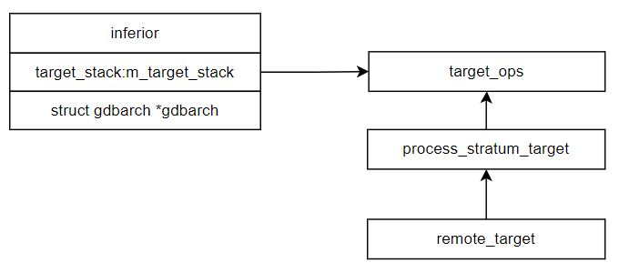

1. Architecture
1.1. bfd (符号端)
- struct objfile – objfiles.h link objfile
- struct sym_fns – symfile.h link sym_fns
- 函数指针
- sym_new_init
- sym_init
- sym_read
- sym_finish
- sym_offsets
- sym_segments
- sym_read_linetable
- sym_relocate
- variable sym_fns elf_sym_fns – elfread.c link
- 一个 sym_fns 实现
- set sym_fns
- _initialize_elfread
- struct bfd – bfd–in2.h link
- struct bfd_target – bfd–in2.h link bfd_target
- variable bfd_target x86_64_elf64_vec
- elf64–x86–64.c link
- function mapping
add_symtab_fns (bfd_target_elf_flavour, &elf_sym_fns); variable bfd_target TARGET_LITTLE_SYM
{
...
} elf64-x86-64.c:
#define TARGET_LITTLE_SYM x86_64_elf64_vec 1.1.1. set bfd vector (xvec)
- bfd_find_target – targets.c link
- find_target
- _bfd_target_vector
static const bfd_target * const _bfd_target_vector[] =
{
...
&x86_64_elf64_vec,
...
} 1.2. Target (目标端)
- class inferior – inferior.h link inferior
- stuct target_ops – target.h link target_ops
- 180+ virtual functions
- wait()
- stop()
- insert_breakpoint()
- class linux_nat_target
- – linux–nat.c link
- 一个 target_ops 实现
- struct gdbarch – gdbarch.c link gdbarch
- some properties like
- byte_order
- bfd_arch_info – bfd–in2.h link
- target_desc
- 100+ function pointers
- gdbarch_tdep_up (target specific vector)
- struct gdbarch_tdep_base – empty struct
- struct i386_gdbarch_tdep – i386–tdep.c link
1.2.1. Register gdbarch
- _initialize_i386_tdep – i386–tdep.c link
- gdbarch_register – arch–utils.c link
- add some commands
- add_setshow_enum_cmd
- add_setshow_prefix_cmd
- add_cmd
- gdbarch_register_osabi
- i386_init_reggroups
- register_remote_support_xml
1.2.2. Remote target

1.2.2.1. 更新 gdbarch in remote debug
- remote_target::open – remote.c link
- open_1
- start_remote
- remote_target::start_remote_1
- ::start_remote – infrun.c link
- wait_for_inferior
- handle_inferior_event
- follow_exec
- add_inferior_with_spaces – inferior.c link
inf–>gdbarch = gdbarch_find_by_info (info);